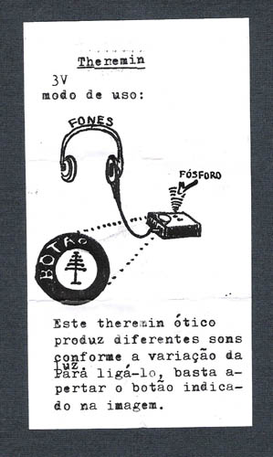

artista convidado
RENZO ASSANO

O workshop objetiva apresentar projetos de eletrônica que utilizam circuitos integrados para a geração de som digital.
Após a construção de osciladores e sequenciadores com envelope, os participantes poderão realizar uma apresentação musical.
RENZO é Formado em Multimidia/Intermidia pela Faculdade de Artes Plásticas da USP, trabalha ministrando oficinas e criando obras artísticas para exposições como Gameart (Sesc Ribeirão Preto), Justapontos (Paço das Artes), Bienal do Mercosul, entre outras. Em 2008 recebeu destaque na revista eletrônica do site da Fundação Iberê Camargo.
oficina 23nov a 09dez2010 / terças e quintas / 15h30 às 18h50 |